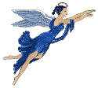
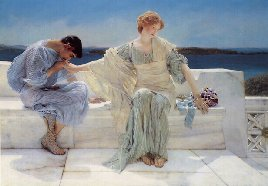
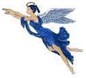
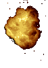
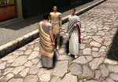
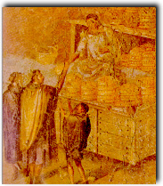
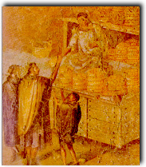

Corría el año 79 de nuestra era. La ciudad de Pompeya dormía cuando el Vesubio había entrado, nuevamente, en erupción. El asombro se reflejaba en el rostro de los pompeyanos, aunque los ciudadanos de Pompeya ya estaban acostumbrados a las constantes erupciones Vesubianas. Desde el año 63 habían sido numerosas las manifestaciones volcánicas del Vesubio.
 Sin
embargo, todavía fue
Sin
embargo, todavía fue mayor su sorpresa, cuando vieron a Plinio el Viejo que se dirigía hacia el
volcán para poder observarlo de cerca. Decía sentir curiosidad por saber el
motivo de su constante furia.
mayor su sorpresa, cuando vieron a Plinio el Viejo que se dirigía hacia el
volcán para poder observarlo de cerca. Decía sentir curiosidad por saber el
motivo de su constante furia.

 Lamentablemente
no volvió para contarlo. Plinio el Viejo
murió
junto con todos los habitantes de Pompeya. La erupción del Vesubio del año 79
arrasó la ciudad de Pompeya. Y junto con ella, destruyó también las ciudades de
Herculano y Stabias.
Lamentablemente
no volvió para contarlo. Plinio el Viejo
murió
junto con todos los habitantes de Pompeya. La erupción del Vesubio del año 79
arrasó la ciudad de Pompeya. Y junto con ella, destruyó también las ciudades de
Herculano y Stabias.
En la actualidad, un pulsímetro registra las pulsaciones del Vesubio. Y a sus fértiles pendientes le debemos la producción del vino "Lacrima-Christi".